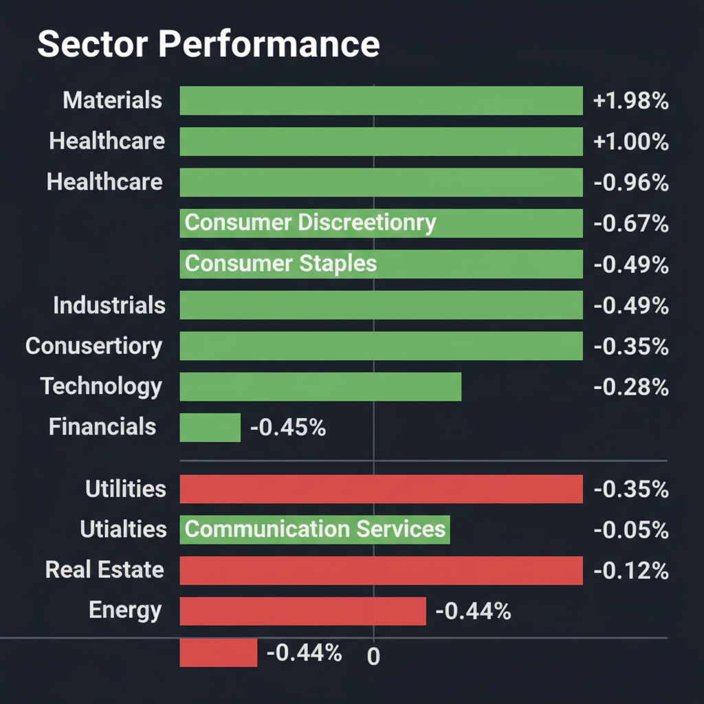
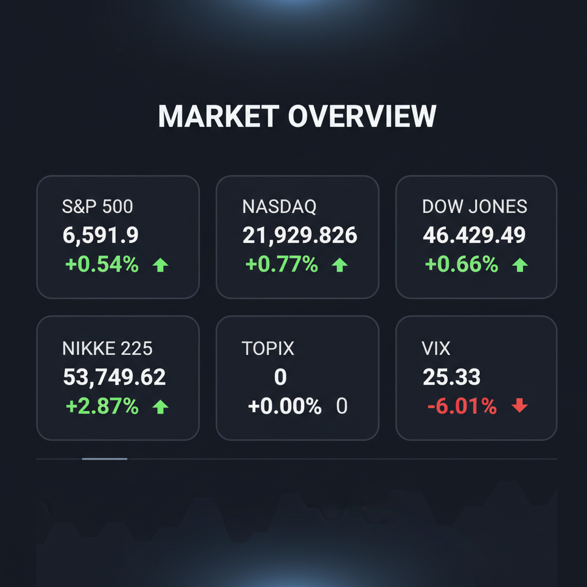

Daily Investment Report - 2026-03-26
Generated: 2026/3/26 8:17:24


本日の投資チームミーティングの議論を統合した、投資家向けの最終レポートをお届けします。
1. エグゼクティブサマリー
- 中東情勢による原油価格40%急騰と物流コスト増がインフレ再燃の脅威となる一方、市場は楽観視しておりファンダメンタルズとの危険な乖離が生じています。
- 資金は防衛・宇宙テーマやインフレヘッジ目的の素材セクターへ局所的にローテーションしていますが、VIX25超の高ボラティリティ環境下では急落リスクが極めて高い状態です。
- 本日の基本戦略は、キャッシュ比率の引き上げとインバース型ETF等によるダウンサイドヘッジを実行しつつ、強固な財務と価格転嫁力を持つ割安な中小型株（好決算銘柄）への「質への逃避」を図ることです。
2. 注目銘柄リスト
ミーティングでの各分析を統合し、隠れた成長株や中小型株を中心に評価を行いました。テンバガー（10倍株）への期待と、マクロ環境・財務リスクの対立点を踏まえ、以下の通り分類しています。
強気（買い推奨）
- ミナトホールディングス（6862） [時価総額: 約100億円未満]: 半導体メモリ周辺機器のニッチトップ企業です。直近の好決算とAI需要の底上げ恩恵を受けつつも機関投資家に未発掘であり、中小型の安全なテンバガー候補として注目されます。
- イノテック（9880） [時価総額: 約200億円水準]: 半導体設計ソフト等を扱い、高い自己資本比率と低PBR、4%超の配当利回りを誇ります。インフレ下でも下値リスクが限定的であり、水準訂正が見込める極めて強固なバリュー株です。
- コメ兵ホールディングス（2780） [時価総額: 約400億円水準]: 金・ラグジュアリー商材の価格上昇とインバウンド需要を直接享受しています。高いキャッシュ創出力と安定した粗利率を持ち、生活防衛意識の高まりを追い風にするリユース業界の勝ち組です。
中立（様子見）
- ジェフリーズ・フィナンシャル・グループ（JEF） [時価総額: 約$11B]: 投資銀行部門は好調な決算でしたが、同時に計上された「信用損失」が金融機関のバランスシート劣化の初期シグナルとなる懸念があり、次四半期までバリュートラップのリスクを見極める必要があります。
- トレジャー・ファクトリー（3092） [時価総額: 約400億円水準]: 増収増益の好決算を発表したものの、市場の事前期待値とのギャップから株価の反応が分かれており、テクニカルな天井打ちシグナルを形成しないか確認するフェーズです。
弱気（警戒）
- AST SpaceMobile（ASTS） [時価総額: 約$2B-$3B水準]: SpaceXのIPO期待をカタリストとしてモメンタム資金が殺到し急騰していますが、恒常的なFCF赤字と高金利下での追加増資（株式希薄化）リスクが極めて高く、リスク管理の観点から警戒が必要です。
- Rocket Lab（RKLB） [時価総額: 約$2B-$3B水準]: 宇宙輸送の業界2位として躍進する成長株ですが、現在の相場はRSIの買われ過ぎ水準にあり、マクロ的な高金利の逆風下ではテーマ株バブル崩壊の危険性を孕んでいます。
- バイセルテクノロジーズ（7685） [時価総額: 約300億円水準]: 同業態の中で増収増益を発表したものの、出張買取に伴う広告宣伝費などの販管費負担が重い構造にあり、今後の物流コスト急騰局面において利益率（マージン）が圧迫される懸念があります。
3. セクター推奨ランキング
資金フローのモメンタムとマクロ経済の追い風・向かい風を考慮したセクターの推奨順位です。
- 理由：原油急騰によるインフレ懸念を背景に、実物資産・コモディティ全般へのインフレヘッジ資金のローテーションが明確に発生しており、テクニカル的にも全セクター中トップの強い買いモメンタムを示しているため。
- 理由：中東の地政学リスク長期化に伴う各国の防衛予算増額という確実な需要に加え、SpaceXのIPO観測という成長カタリストがバリューとグロース両面の資金を牽引しているため。
- 理由：ホルムズ海峡の封鎖リスクに対する必須の地政学ヘッジ枠として機能しますが、直近の株価は原油高のニュースに逆行して下落するベア・ダイバージェンスを見せており、高値追いには注意が必要なため。
- 理由：原油高に起因するインフレ再燃と「高金利の長期化（Higher for Longer）」観測が最大の逆風となり、マクロ的な追い風が全く吹いていないため。
- 理由：USPSの燃料サーチャージ等に見られる物流・輸送コストの急騰が利益率を直接的に圧迫し、価格転嫁力の弱い企業を中心に業績下方修正リスクが極めて高いため。
4. 今週の注目イベント
- 3月26日：ハニーズホールディングス、FフォースG、NaITOの決算発表
- 3月26日：Pelican Acquisition Corporation (PELI)の「GLND」としてのNASDAQ新ティッカー取引開始
- 今週中（日程未定）：SpaceXのIPO（新規株式公開）申請の可能性に関する報道の続報
5. リスク要因
- スタグフレーションとマージン圧縮リスク：原油価格の40%急騰とUSPSの8%燃料サーチャージに見られる物流コストの急上昇が、全産業の利益率を圧迫し、物価高と景気停滞が同時進行するリスク。
- 高金利の長期化（Higher for Longer）リスク：インフレ再燃によってFRBの利下げ観測が後退し、赤字グロース株（宇宙関連等）の資金繰り悪化や株式の希薄化、金融機関の信用損失拡大を招くリスク。
- 地政学ショックの拡大リスク：イランによるホルムズ海峡の事実上の封鎖長期化や、ロシアによる裏面工作などにより、世界のサプライチェーンが麻痺し制御不能なインフレを引き起こすテールリスク。
- テクニカルな騙し（ブルトラップ）と高ボラティリティ：VIXが25.33と危険水域にある中、日経平均のRSI過熱（買われ過ぎ）やエネルギー株の乖離が示唆する通り、現在の楽観相場が一気にパニック売りに転じるリスク。
6. アクションアイテム
今日、投資家が取るべき具体的な行動方針です。
- キャッシュポジションの大幅な引き上げ：VIX25超の高ボラティリティ環境下での突発的な急落に備え、新規の買いポジションを通常の3分の1程度に縮小し、手元資金（流動性）を確保してください。
- ダウンサイド・ヘッジの即時実行：日経平均の極端な過熱感に対する防衛策として、「日経平均ベア2倍上場投信（1360）」の短期的な組み入れや、VIXおよび米国指数のプットオプションの購入を実行してください。
- 宇宙関連・モメンタム株の利益確定：SpaceXのIPO報道で急騰しているASTSやRKLBなどの赤字グロース株を保有している場合は、テクニカルな過熱感を理由に直ちに利益を確定し、新規の飛び乗り買いは厳禁としてください。
- ポートフォリオの入れ替え（質への逃避）：価格転嫁力が弱く利益率が圧迫されやすいEコマース・小売銘柄を売却し、強固なバランスシートと割安なバリュエーションを持つ中小型バリュー株（イノテック、ミナトHD等）やインフレ恩恵株（素材セクター、コメ兵等）へ安全マージンを取って資金をシフトしてください。